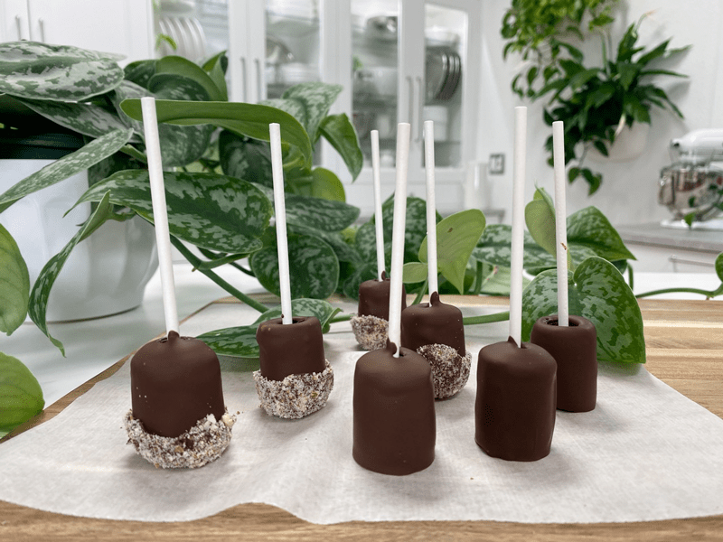
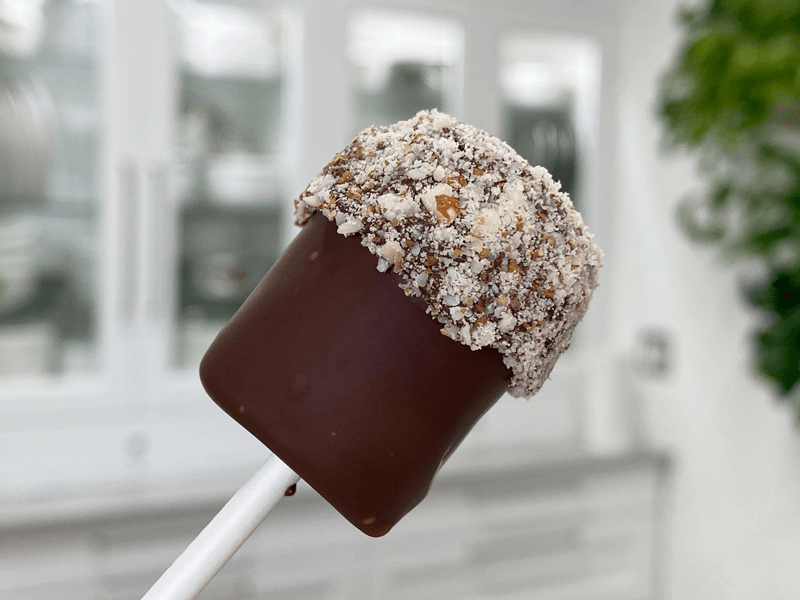
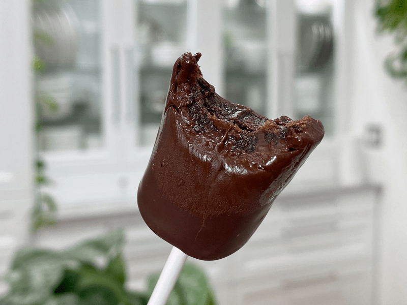

Chocolate Dipped Chewy Fruit Leather Lollipops
Well, you clicked on the recipe title, so that shows me you are interested in trying my raw, vegan, nut-free, GOURMET candy-on-a-stick! It’s a favorite for kids and adults alike. Made from quality homemade fruit leather and antioxidant-rich raw chocolate. The title may sound sophisticated or complicated… but don’t let that you fool you. This special treat is easy to make but tastes like you poured your love into it, which you did!

These gourmet lollipops are top-notch! First off, anything covered in chocolate is going to be a winner (unless you don’t like chocolate). The inside is filled with sweet chewy fruit leather. I shared the particular fruit leather recipe that I made for this recipe down below, but you can click (here) to view the other sixty-nine fruit leather recipes that I have on the site. Shoot, I have made a LOT of fruit leather in my lifetime. haha

I was in the middle of making this treat when I got the phone call that my Grandmother was in the hospital facing the end of her life. I quickly wrapped up the recipe, took a few photos, and passed them over to my husband to enjoy while I flew off to Alaska. I wish I had taken some better pictures, but I can’t complain about what I got considering the circumstances. Doesn’t that shot below look… well, darn-right yummy?!!

Gift Giving Idea
With the holidays just around the corner… wait, they are straight ahead in front of us! Who am I kidding?! These sweet treats would make for the perfect gift (Halloween, Christmas, Winter Celebration, etc.). If you are looking for a presentation idea, I have one for you. After the lollipops are made, slip them into the Wilton Clear Tall Treat Bag. I provided a link for some that you can purchase through Amazon, but you can usually find these locally in WalMart, craft stores, etc. Then tie them shut with twine or a pretty ribbon. If you can find a box that will accommodate the height of the stick, you could load them into a box with some beautiful tissue paper. I don’t know about you, but I would love a gift like this. I hope you enjoy this recipe, please be sure to leave a comment below. blessings, amie sue
 Ingredients:
Ingredients:
Banana Grape Fruit Leather
- 4 large (610 g) ripe bananas
- 1 1/2 cup (430 g) fresh grape juice
- 2 tbsp (23 g) chia seeds, ground
- 1 Tbsp (9 g) Garnet Elderberry Supercolor powder (optional)
- 1/4 tsp (2 g) sea salt
Chocolate Coating
Accessories
- Lollipop sticks
- Crushed nuts (optional)
Preparation:
Fruit Leather Centers
- Option 1 – Make any flavor of fruit leather that you desire. I have 69 fruit leather recipes… click (here) to view them.
- Option 2 – Make the fruit leather recipe above, combine all the ingredients in a blender, and blend on high until ultra-smooth.
- Spread the fruit puree on teflex sheets that come with your dehydrator. Pour the puree to create an even depth of 1/4 inch. If you don’t have teflex sheets for the trays, you can line your trays with plastic wrap or parchment paper. Do not use wax paper or aluminum foil.
- Lightly coat the food dehydrator plastic sheets or wrap with a cooking spray, I use coconut oil that comes in a spray can.
- When spreading the puree on the liner, allow about an inch of space between the mixture and the outside edge. The fruit leather mixture will spread out as it dries, so it needs a little room to allow for this expansion.
- Be sure to spread the puree evenly on your drying tray. When spreading the puree mixture, try tilting and shaking the tray to help it distribute more evenly. Also, it is a good idea to rotate your trays throughout the drying period. By doing this, it will help assure that the leathers dry evenly.
- Dehydrate the fruit leather at 145 degrees (F) for one hour, then reduce the temp to 115 degrees (F) and continue drying for about 16 (+/-) hours. The finished consistency should be pliable and easy to roll.
- Check for dark spots on top of the fruit leather. If dark spots can be seen it is a sign that it is not completely dry.
- Press down on the fruit leather with a finger. If no indentation is visible or if it is no longer tacky to the touch, the fruit leather is dry and can be removed from the dehydrator.
- Peel the leather from the dehydrator trays or parchment paper. If it peels away easily and holds its shape after peeling, it is dry. If the fruit leather is still sticking or loses its form after peeling, it needs further drying.
- Under-dried fruit leather will not keep; it will mold. Over-dried fruit leather will become hard and crack, although it will still be edible and will keep for a long time
- Once the fruit leather is done, cut in long strips. I made mine roughly 1″ wide and used the full length of the fruit leather sheet.
Chocolate Coating
Homemade raw chocolate method.
- Click (here) to get the recipe and instructions on how to make raw dipping chocolate.
Melting store-bought vegan chocolate chip method.
- Dehydrator melting method: Place chocolate chips in a glass bowl. Make sure the container is large enough to stir the chocolate freely, and it will accommodate the dipping action. Place in the dehydrator with the temperature set at 145 degrees. Check it every 15 minutes, giving it a good stir. Repeat this process until chocolate is smooth and melted.
- Microwave melting method: Place chocolate chips in a glass bowl. Make sure the bowl is large enough to stir the chocolate freely, and it will accommodate the dipping action — microwave on high for 30 seconds. Stir chips then microwave again for another 30 seconds and stir again. Repeat this process until chocolate is smooth and melted.
Assembly
- Lay a strip of fruit leather in front of you.
- Place the lollipop stick at one end and evenly roll the fruit leather to the other end.
- Dip it into the melted chocolate and place on a non-stick surface to dry.
- If you wish to add a coating of crushed nuts to the surface, dip the already coated lollipop halfway into the melted chocolate and then roll it in the crushed nuts. Set on a non-stick surface to dry.
- Once dry, gently wrap each sucker with either wax paper or plastic wrap.
- Self-life will be 1-2 weeks on the counter, or they can be frozen for 1-3 months.
© AmieSue.com